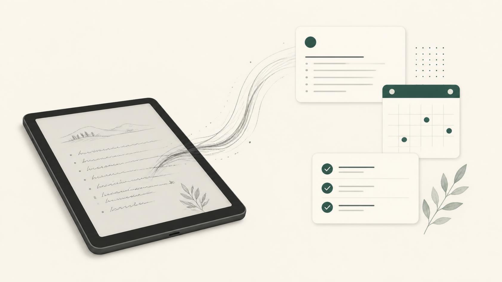

Your tablet's handwriting, in the apps you already use.
E-ink tablets sync to their own cloud and stop there. InkRelay picks your notebooks up, reads the handwriting on your Mac, and files every page into Obsidian, Apple Notes, OneNote, Notion or Google Docs. Tasks you write become reminders. Planner pages land in your calendar. Nothing is uploaded.

How it works
Set it up once. From then on it runs in the menu bar and you keep writing.
Write on the tablet
Viwoods Cloud is read directly. Every other tablet exports PDFs to Google Drive, Dropbox, OneDrive or iCloud Drive; InkRelay watches that folder. Supernote notebooks are read in their own format.
It's read on your Mac
Apple's on-device recognition turns the ink into text, page by page, with your own vocabulary for names and products. Optional AI transcription for the hard pages, on a budget you set.
It lands where you work
Each notebook becomes a note with the original page beside it. Edits you make around it survive every sync. Tasks go to Reminders; plans to your calendar; new pages to a review stack.
Any tablet, any notes app
One app instead of a plugin per vendor. This is the whole matrix today.
| Tablet | How notes arrive | Checked with |
|---|---|---|
| Viwoods AiPaper, AiPaper Mini | Straight from Viwoods Cloud: notebooks, memos, the Daily planner, the ink layer without the template. Or a PDF export folder. | A real account: notebooks, memos, 20 planner days |
| Supernote Manta, Nomad, A5 X, A6 X | .note files from the device's own sync, read directly, or PDF exports | Public sample notebooks and the device's own PDFs |
| reMarkable Paper Pro, Paper Pro Move, 2 | PDF exports to Google Drive, Dropbox or OneDrive | Export folders in general; a reMarkable export itself still to come |
| Boox Note Air, Tab, Go | PDF or PNG exports to any cloud folder | Export folders in general |
| Kindle Scribe, Scribe Colorsoft | Notebooks you share by email, picked up from Mail | Built against Amazon's export email; a live inbox still to come |
| Anything else | A folder of PDFs or images | Yes |
A read-later stack of your own pages
Every new page and every planner to-do becomes a card. Flip through them when you have a minute, on the Mac or on your phone: Done, or Later. Lines with a date become calendar events with one tap. Done cards can come back in 3, 14 and 60 days if you want to remember what you wrote.
A weekly digest in Obsidian sums the week up: what you wrote, which planner days, which tasks are still open.
Read on your Mac. Kept on your Mac.
No server
Recognition runs on your Mac. The license is checked on your Mac. Phones share through your own iCloud Drive. There is nothing to sign up for.
You choose what leaves
AI transcription is off until you turn it on, per source, with your own key and a monthly cap. Google, Microsoft and Notion see only what you send them.
Your edits stay
In Obsidian, InkRelay rewrites only its own block. Write around it, tag it, link it; re-syncs leave your words alone.
Nothing is erased for good
Deletions, if you turn them on, go to the Trash or Recently Deleted. A folder that turns up empty deletes nothing.
Pricing
Free for what a Mac can do alone. One payment for the rest. Every install starts with 14 days of everything.
Free
$0
- Export folders from any tablet
- Obsidian, with daily notes and the weekly digest
- Apple Notes, Apple Calendar, Apple Reminders
- On-device recognition with your vocabulary
- Send articles to the tablet
Pro
$29 once, for one person's Macs
- Everything in Free
- Viwoods Cloud, read directly, ink layer and planner included
- Kindle Scribe by email
- Google Calendar and Docs, Outlook Calendar, OneNote, Notion
- The review stack, on the Mac and on iPhone and iPad
- AI transcription with your own key
Keys are sent by email and work offline on all your Macs.
When the trial ends, Pro parts pause and say so; nothing is deleted, and they pick up where they stopped once a key is entered.
Questions
Does my handwriting leave my Mac?
No. Vision, Apple's recognition, runs on the Mac. The only exception is AI transcription, which you turn on yourself for a source, with your own key.
How good is the recognition?
Clear handwriting comes out right. Messy lines don't, on any system; InkRelay keeps the page image beside the text so you always have the original, and lets you add names and words it should expect. For hard pages, AI transcription reads better and suggests a title.
Which tablet do I need?
Any that can export PDFs to a cloud folder, which is all of them. A Viwoods AiPaper with Viwoods Cloud needs no export at all. Supernote notebooks are read in their own format.
Does it need the Mac to be on?
Yes; InkRelay syncs while it runs. Open it at login and forget it. The iPhone app reads exports and the review stack on its own, through iCloud Drive and the Files app.
What happens to my notes if I stop paying?
Nothing. There's no subscription. A Pro key is yours; the free parts never pause.
Can I use it from the terminal or with an AI assistant?
Yes. inkrelay ships inside the app with every command, and inkrelay mcp serves your notes to Claude and other MCP clients: search what you wrote, list tasks, work through the stack.
Download
InkRelay for Mac, macOS 14 or later, Apple silicon and Intel, signed with a Developer ID and notarized by Apple. The iPhone and iPad app follows on TestFlight.